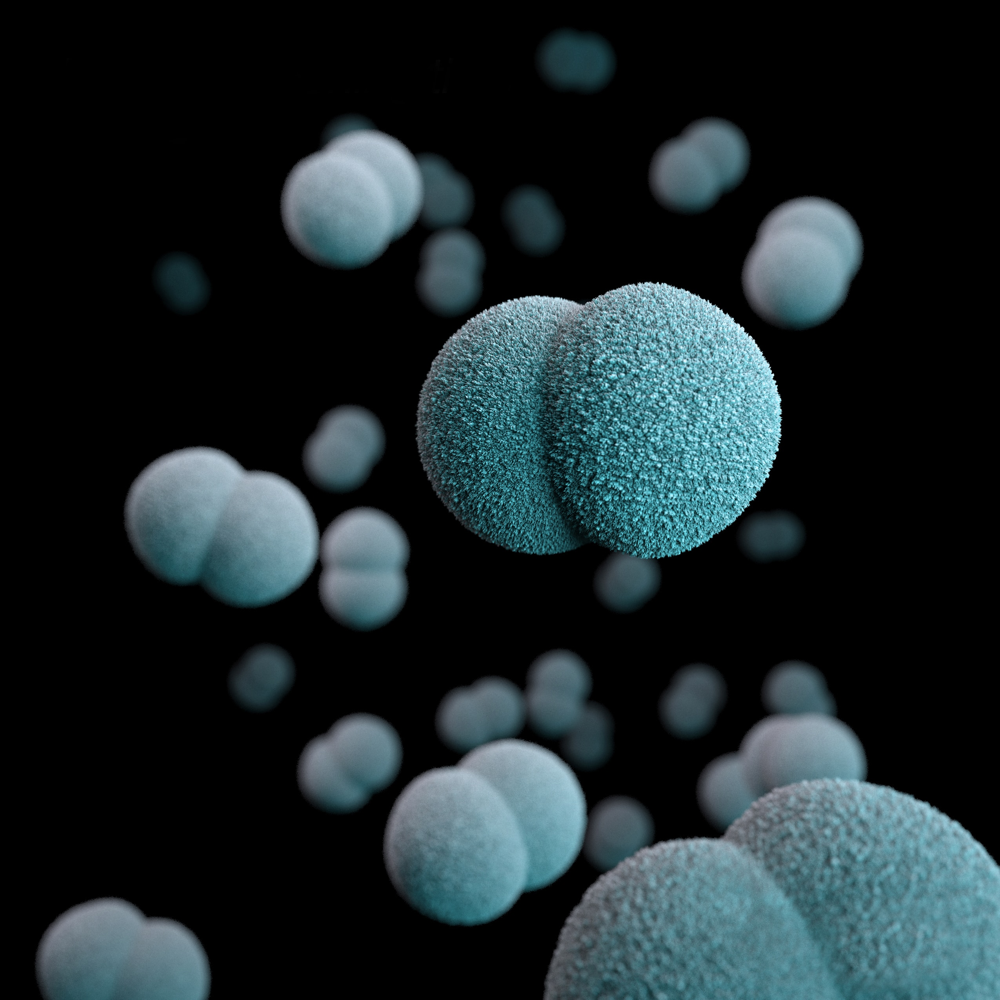

- Team
- Project
- Lab
- Model
- Parts
- Improvement
- Contributions
- Judging

2020 Jilin_China team is in full compliance with the safety and security policies of the iGEM competition. Set in the National Engineering Laboratory for AIDS Vaccine, School of Life Sciences, Jilin University,our laboratory falls under the biosafety level 1 and level 2, which is sufficient for all our experiments. Before entering the laboratory, we were trained by the professional teachers on the basic skills of the laboratory and the related instruments. Everyone has been tutored about laboratory safety and instructed to learn the use of aseptic consoles , autoclaves, PCR instruments, nucleic acid electrophoresis instruments, enzyme-labeled instrument, bacterial culture shakers and centrifuges, and Dr.Tiejun Gu checked laboratory hygiene as well as waste disposal on time. Moreover, we were required to participate in the mandatory university security introductions, including explanation of reanimation equipment, first aid and escape routes.
In the selection of the strains used in the experiment, we decided to choose E.coli DH5α，E.coli BL21 and ΔEnvZ E.coli strain. E.coli DH5α and E.coli BL21 mainly show the immunodeficiency of exogenous DNA. It is a strain widely used in genetic engineering, lacking of certain immune mechanisms compared to normal strains. E. coli DH5a ，E.coli BL21 and ΔEnvZ E.coli strain belong to Risk Group 1 with no harm to healthy people. After experiment, we sterilize bacteria after experiments to prevent its leakage to the environment. Our parts are constructed in plasmid pSB1C3. The plasmid and segment is safe. For our parts, they are synthetic RNA-based thermosensors without coding sequence. So they will not raise safety issue. Moreover, this year, we didn't do animal experiment. We have submitted Check-in form for all of the parts we used this year.
Our laboratory is equipped with ultra-clean table and biosafety cabinet. During the experimental process, we strictly obey the laboratory safety management standard. Here are the lab codes for lab protection for team members. 1. Eating or playing is strictly inhibited in the laboratory. Persons passed the experimental test can enter the laboratory for experimental operation. 2. Everyone must wear a long-sleeved lab coat and gloves and operate in the area delineated by the laboratory. 3. When performing agarose electrophoresis, everyone must wear a mask and goggles. Latex gloves should be covered with a layer of PE gloves to provide double protection. Electrophoresis areas should be separated from other areas. Do not touch contaminated areas before removing PE gloves. 4. During aseptic operation, use UV lamps and alcohol lamps safely. Turn off the alcohol lamp in time after completing the experiment.